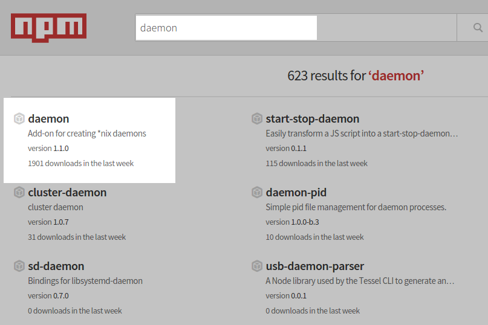
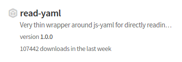
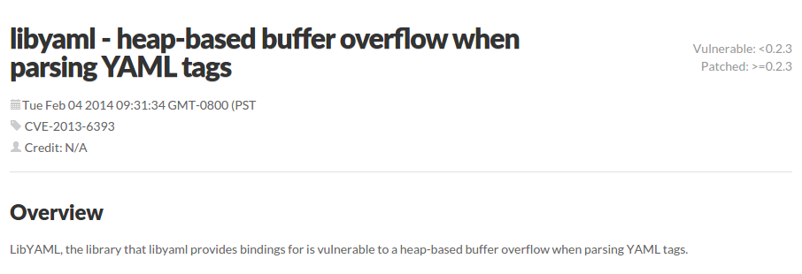

Code reuse
(considered hazardous)
“Don't write code” is not a new sentiment.
Need to do $X?
{npm,pip,gem} install $XBut how do you pick good modules?
Examples of terrible criteria
- Has many stars on GitHub
- Has many downloads this week on npmjs.org
- Someone tweeted about it
Better criteria
- Been in stable production use for a while
- Healthy bug report/fix lifecycle
- Good packaging and availability of updates
- Periodic security reviews
- (All the usual stuff about doing one thing well...)
Quick ecosystem recap…
Hypothesis: candidates from outer rings meet those critera more often
On to some examples
Functionality/completeness
Daemonizing your server

Daemonizing your server
require('daemon')();
console.log("Yay I'm now a daemon! Right?");
Daemonizing your server
- Fork
- Write a pidfile
- Change umask
- Change UID/GID
- Set the process name
- Clean up ENV
- Change working dir
- Create a new session ID
- Fix stdin/out/err
Better solutions
Linux
BSD
- They do all that stuff and more
- Battle hardened! Core part of the OS.
Resource comparison
| Your code: | usually lean as hell | |
| 3rd party libs: | highly variable, need to research | |
| Lang stdlib: | large user base, some funding | |
| OS/platform: | massive user base, funding |
But in reality it's not just a vertical slice…
Let's talk about indirect benefits
Some nuances
read-yaml/JS-YAML


libyaml

What libyaml did right
By wrapping native libraries, it got the indirect benefits of review by teams like Red Hat Product Security, who found this CVE.
What libyaml did wrong
Re-use by copy/paste meant that the Node libyaml author had to get around to patching his own copy of the native source. Just updating the OS copy of the library didn't fix the problem.
libyaml hall of shame
Some libraries that wrap by copy/paste still haven't been updated for this 2013 vulnerability.
npm, pip and gem
- Undeniably convenient
- Quality control is problematic - no moderation
- Security nightmare
Lack of review
- Contrast with app store “walled gardens”
- People very used to trusting packages
Use tools like nsp to check your dependencies for updates and vulnerabilities.
$ nsp audit-package
Name Installed Patched Vulnerable Dependency
express 4.2.0 >=3.11 <4 || >=4.5 myapp > express@4.2.0
send 0.3.0 >= 0.8.4 myapp > express@4.2.0 > send@0.3.0
qs 0.6.6 >= 1.x myapp > express@4.2.0 > qs@0.6.6
serve-static 1.1.0 ~1.6.5 || >=1.7.2 myapp > express@4.2.0 > serve-static@1.1.0No signed packages
- Currently no support in npm or pip
- Not commonly used by gems - no chain of trust
Immature infrastructure
- All new things have teething issues
- RubyGems 2013 remote code execution flaw
- NPM 2014 static file leakage (and other) flaws
Summary
- Use other people's code
- Do due dilligence first, and think about your selection criteria
- Prefer big tech communities that have the resources to do proper research